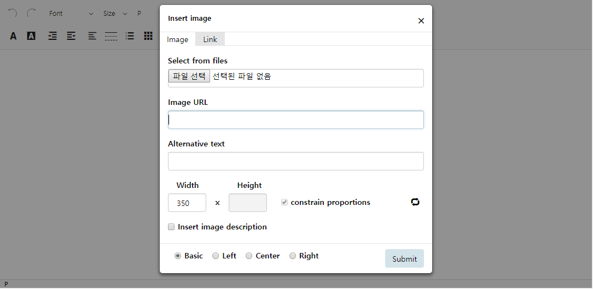
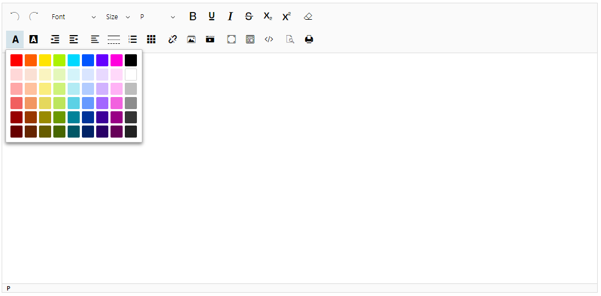

Add new module object
1. It is divided into two folders dialog and submenu
- dialog : It is a module in the form of a dialog
Add the {moduleName}.js file to the 'plugins/dialog/' directory

- submenu : It is a module in the form of a submenu
Add the {moduleName}.js file to the 'plugins/submenu/' directory

2. How to create {moduleName} .js
- Create a {moduleName}.js file with the same name as the module you want to add to the dialog or submenu folder
- SUNEDITOR.plugin.{moduleName} Declare an Object and declare it within this Object
Adds an element, adds a function to a module, and registers an event
- In common, all module objects must declare a function named add
- The add function takes the SUNEDITOR.editor Object and the element of the module button as an argument value
- The argument values of the dialog module : SUNEDITOR.editor Object
- The argument values of the dialog submenu : SUNEDITOR.editor Object, element of the module button
- The SUNEDITOR.editor object contains the commonly available function and variable values, context
- SUNEDITOR.editor.context contains the elements, variable values, and user options that suneditor should remember
- If you need to store the value in SUNEDITOR.editor.context
SUNEDITOR.editor.context.{moduleName} Declare the Object and use it
- If you need to use the SUNEDITOR.editor Object in a function in a module
Call this function by replacing the this value of the function
with the SUNEDITOR.editor Object using the call function
- It is recommended to keep the this value of all functions in the module except the add function as SUNEDITOR.editor
3. add function definition
- Include {moduleName}.js file when module button is first clicked
- This function is executed only once when the {moduleName}.js file is loaded.
- It has a SUNEDITOR.editor Object as its first argument value
- If it is a module in the submenu, it will have the second element value of the button of the additional clicked button
- element creation and event registration Define the action to be inserted into the suneditor Dom
- The element and variable values that need to be saved use that object by declaring SUNEDITOR.editor.context.{moduleName} Object
4. When adding a dialog module
- The module in the dialog folder receives only SUNEDITOR.editor Object as argument value in add function.
- After creating a tag element
- Insert the element created in SUNEDITOR.editor.context.{moduleName}.modal
- When you need to focus immediately after the Dialog window appears
- In SUNEDITOR.editor.context.{moduleName}.focusElement, insert the element that should have focus
- element creation, event registration, and insert the created element into context.dialog.modal using appendChaild function
- All dialog modules must declare an init function.
- The init function is executed when the window is closed.
- You can insert the code that initializes the elements or variables you need.
5. When adding a submenu module
- Modules in the submenu folder receive the SUNEDITOR.editor Object and the module button element as argument values in the add function
- The top-level div that contains the submenu element must contain 'layer_editor' in the class name
- element creation, event registration, and insert the created element into targetElement.parentNode using appendChaild function
6. Add module button in buttonList property of options when creating suneditor
- create example
SUNEDITOR.create('exampleButtonList', {
/** The default setting is all buttons display */
// Defines button list to array
buttonList: [
// Create a group of buttons as an array
// All buttons must be included in the button group
// button group 1
[
'undo',
'redo'
],
// button group 2
[
'font',
'fontColor'
],
// button group 3
[
'line'
],
// button group 4
// It is a way to insert a user defined module button
// Define json in an array of button group
[
{
buttonClass:'', // className to be added to the button
title:'Submenu', // title property
dataCommand:'sample_submenu', // The js file name of the added module
dataDisplay:'submenu', // The directory location under the plugins folder of the added module ('dialog', 'submenu')
displayOption:'', // Options for whether the range of the dialog is inside the editor or for the entire screen
// If set to 'full', the entire screen will be used ('', 'full')
innerHTML:'<div class="ico_submenu"></div>' // The source into the button's innerHTML (icon image)
},
{
buttonClass:'',
title:'Dialog',
dataCommand:'sample_dialog',
dataDisplay:'dialog',
displayOption:'',
innerHTML:'<div class="ico_dialog"></div>'
},
{
buttonClass:'',
title:'FullDialog',
dataCommand:'sample_fullDialog',
dataDisplay:'dialog',
displayOption:'full',
innerHTML:'<div class="ico_dialog"></div>'
},
'image'
]
]
});
- To add a module as the suneditor's default button, refer suneditor.js: _createToolBar (function), _defaultButtonsList (object)